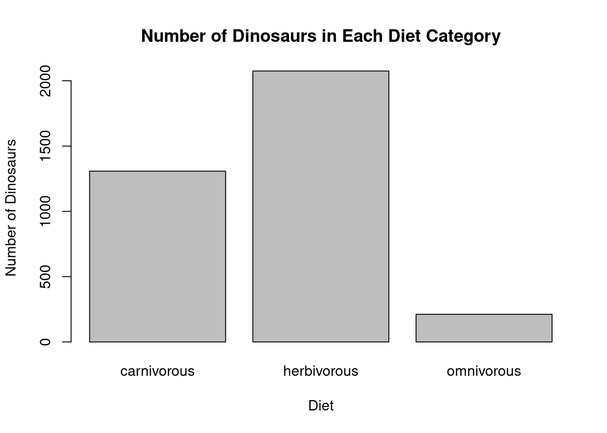

Assignment 1 · R, data cleaning and mapping
Dinosaur fossil explorer
From a dataset of 4,951 dinosaur fossil records, I filtered coordinates and dinosaur types to build a worldwide map and a diet-frequency chart.
Rggplot2MapsData cleaning


What this demonstrates
- Converted a categorical variable into a controlled factor for legend order.
- Filtered records and visualised locations on a world map.
- Summarised dinosaur diet categories.
Code preview
First 34 lines shown. Open the full script above for everything.
# Dinosaur fossils: map and diet summary
# Extracted from my DATA202 Assignment 1, Question 7.
# Requires dinosaurs.csv in this folder, ggplot2 and maps.
# From inside this project folder, run: source("dinosaur_analysis.R")
# Load required libraries
library(ggplot2)
library(maps)
# Create the world map data
world <- map_data("world")
# Read the dinosaur dataset
dinos <- read.csv("dinosaurs.csv")
# Create the dinosaur type factor
dinos$type_factor <- factor(
dinos$type,
levels = c(
"armored dinosaur",
"ceratopsian",
"large theropod",
"ornithopod",
"sauropod",
"small theropod"
)
)
########## 1st COMMENT LINE - Insert code below this line
dinos <- dinos[dinos$lng <= 180, ]
dinos <- dinos[!is.na(dinos$type_factor), ]
The images are from my submitted coursework HTML report; grades are reported by the student.